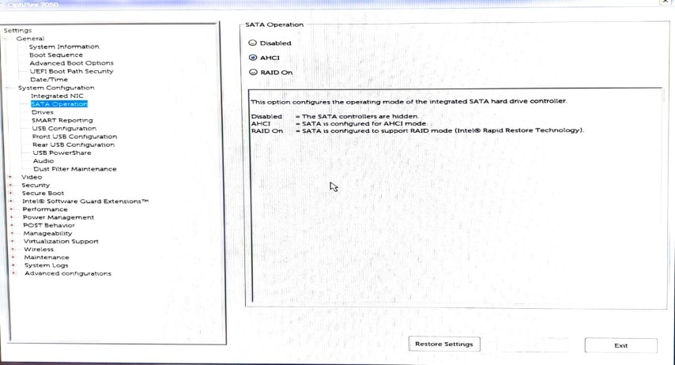
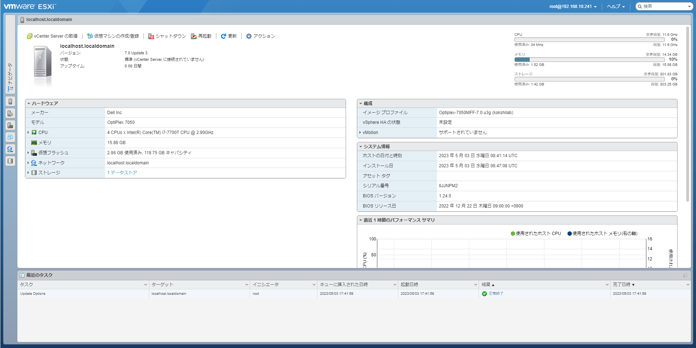

Vmware ESXiをOptiplex 7050にインストールする
概要
次の環境でESXiを立ち上げます。
- Optiplex 7050 マイクロフォームファクター(ヤフオクで購入)
- Crucial SSD P3 NVMe
インストーラの作成
Info
こちらを参考にしました。 はじめよう、おうちクラウド - ESXi インストーラの作成
ESXiのダウンロード
VMware vSphere Hypervisor 7.0 ダウンロード センターから入手します。VMware Customer Connectアカウントの登録と、評価版利用のための登録が必要でした。
Optiplex 7050のオンボードNICはおそらく標準のISOファイル(VMware vSphere Hypervisor (ESXi ISO) image)でも大丈夫です。今回はNVMe SSDがドライバ対応していないのでVMware vSphere Hypervisor (ESXi) Offline Bundleをダウンロードします。
今回インストールするバージョンは7.0U3gです。
コミュニティドライバの入手
NVMe Driverは適用が必要です。保険でNetworking Driverも入れておきます。
- Community NVMe Driver for ESXi
- Version 1.2
- Community Networking Driver for ESXi
- version 1.2.7
カスタムイメージの作成
ESXi本体とコミュニティドライバを合体させ、カスタムイメージを作成します。PowerCLI Image BuilderというPowerShell用のツールを利用します。
PowerCLIの準備
PowerCLIはPowerShellを管理者で起動したあと次のコマンドを実行することでインストール出来ます。
PS > Install-Module -Name VMware.PowerCLI
PS > Get-Module VMware.PowerCLI -ListAvailable
ディレクトリ: C:\Program Files\WindowsPowerShell\Modules
ModuleType Version Name ExportedCommands
---------- ------- ---- ----------------
Manifest 13.1.0.... VMware.PowerCLI
PowerCLI 13.0では、VMware.ImageBuilderモジュールを利用するためにPython3.7といくつかのライブラリが必要です。
Info
こちらを参考にしました。 Installing and Configuring Python for PowerCLI
Python3.7をDownload Python | Python.orgから入手し、インストールします。Windowsの場合は、デフォルトで次の場所にインストールされます。
%USERPROFILE%\AppData\Local\Programs\Python\Python37
pipを利用してsix psutil lxml pyopenssl をインストールします。インストールしたPython3.7のpipを利用します。
PS > C:\Users\[USERNAME]\AppData\Local\Programs\Python\Python37\Scripts\pip.exe install six psutil lxml pyopenssl
PowerCLIにインストールしたPythonのパスを設定します。
PS > Set-PowerCLIConfiguration -PythonPath C:\Users\[USERNAME]\AppData\Local\Programs\Python\Python37\python.exe -Scope User
設定後はPowerShelを再起動します。
イメージの作成
フォルダ構成は次のとおりになっています。
PS D:\WORKS\ESXi\Installer> dir
ディレクトリ: D:\WORKS\ESXi\Installer
Mode LastWriteTime Length Name
---- ------------- ------ ----
-a---- 2023/05/03 13:26 229802 Net-Community-Driver_1.2.7.0-1vmw.700.1.0.15843807_19480755.zip
-a---- 2023/05/03 13:27 98560 nvme-community-driver_1.0.1.0-3vmw.700.1.0.15843807-component-18902434.zip
-a---- 2023/05/03 13:26 381466339 VMware-ESXi-7.0U3g-20328353-depot.zip
PowerShelでの実行ポリシーを変更
PS D:\WORKS\ESXi\Installer> Get-ExecutionPolicy
Restricted
PS D:\WORKS\ESXi\Installer> Set-ExecutionPolicy RemoteSigned -Scope Process
Add-EsxSoftwareDepot で ESXi インストールイメージのインポート
Add-EsxSoftwareDepot -DepotUrl .\VMware-ESXi-7.0U3g-20328353-depot.zip
Depot Url
---------
zip:D:\WORKS\ESXi\Installer\VMware-ESXi-7.0U3g-20328353-depot.zip?index.xml
イメージプロファイルの取り込み
-no-tools ではないもの、s や sc でないものを選びます。
PS D:\WORKS\ESXi\Installer> Get-EsxImageProfile
Name Vendor Last Modified Acceptance Level
---- ------ ------------- ----------------
ESXi-7.0U3g-20328353-standard VMware, Inc. 2022/09/01 0... PartnerSupported
ESXi-7.0U3g-20328353-no-tools VMware, Inc. 2022/08/23 3... PartnerSupported
PS D:\WORKS\ESXi\Installer> $ip = (Get-EsxImageProfile)[0]
PS D:\WORKS\ESXi\Installer> echo $ip
Name Vendor Last Modified Acceptance Level
---- ------ ------------- ----------------
ESXi-7.0U3g-20328353-standard VMware, Inc. 2022/09/01 0... PartnerSupported
ドライバの取り込み／確認
PS D:\WORKS\ESXi\Installer> Add-EsxSoftwareDepot -DepotUrl .\Net-Community-Driver_1.2.7.0-1vmw.700.1.0.15843807_19480755.zip
PS D:\WORKS\ESXi\Installer> Add-EsxSoftwareDepot -DepotUrl .\nvme-community-driver_1.0.1.0-3vmw.700.1.0.15843807-component-18902434.zip
PS D:\WORKS\ESXi\Installer> Get-EsxSoftwarePackage | ? { $_.Name -like '*community' }
Name Version Vendor Creation Date
---- ------- ------ -------------
nvme-community 1.0.1.0-3vmw.700.1.0.15843807 VMW 2020/01/08 12...
net-community 1.2.7.0-1vmw.700.1.0.15843807 VMW 2022/03/10 21...
カスタムしたイメージプロファイルの作成
PS D:\WORKS\ESXi\Installer> $ip2 = New-EsxImageProfile -CloneProfile $ip -Name Optiplex-7050MFF-7.0.u3g -Vendor kokshilab -AcceptanceLevel CommunitySupported
PS D:\WORKS\ESXi\Installer> echo $ip2
Name Vendor Last Modified Acceptance Level
---- ------ ------------- ----------------
Optiplex-7050MFF-7.0.u3g kokshilab 2022/09/01 0... CommunitySupported
PS D:\WORKS\ESXi\Installer> Add-EsxSoftwarePackage -ImageProfile $ip2 -SoftwarePackage nvme-community,net-community
Name Vendor Last Modified Acceptance Level
---- ------ ------------- ----------------
Optiplex-7050MFF-7.0.u3g kokshilab 2023/05/03 1... CommunitySupported
カスタムインストーラをZIPとISOでエクスポート
PS D:\WORKS\ESXi\Installer> Export-EsxImageProfile -ImageProfile $ip2 ./Optiplex-7050MFF-7.0.u3g.zip -ExportToBundle
PS D:\WORKS\ESXi\Installer> Export-EsxImageProfile -ImageProfile $ip2 ./Optiplex-7050MFF-7.0.u3g.iso -ExportToIso
USBメモリに展開
Rufusを利用してUSBメモリに展開します。
システム領域サイズのカスタマイズ
デフォルトだと120GBの領域がシステム領域として確保されてしまうそうなので変更します。
指定方法 : systemMediaSize= * min (33 GB, for single disk or embedded servers) * small (69 GB, for servers with at least 512 GB RAM) * default (138 GB) * max (consume all available space, for multi-terabyte servers)
USBメモリにイメージを展開後、boot.cfgを変更します。
bootstate=0
title=Loading ESXi installer
timeout=5
prefix=
kernel=/b.b00
kernelopt=runweasel cdromBoot systemMediaSize=min # systemMediaSize=min を追加
modules=(中略)
updated=0
インストール
Info
こちらを参考にしました。 はじめよう、おうちクラウド - ESXiのインストールと基本設定
上記の手順でインストールしました。この手順だけだとNVMe SSDが認識されなかったため一部BIOSの設定を変更しました。RAIDモードに設定されている場合は動作しません。

基本的には手順に沿ってインストールを行います。インストールが終わり、再起動後に固定IPの設定を投入しました。デフォルトではDHCPですが、割り当てられたIPアドレスが画面に表示されるため設定を入れずとも管理Webページにはアクセスできます。
管理UIにアクセスできたらインストール完了です。

-
評価版ESXi 8 (https://customerconnect.vmware.com/jp/evalcenter?p=vsphere-eval-8) ではないので注意 ↩